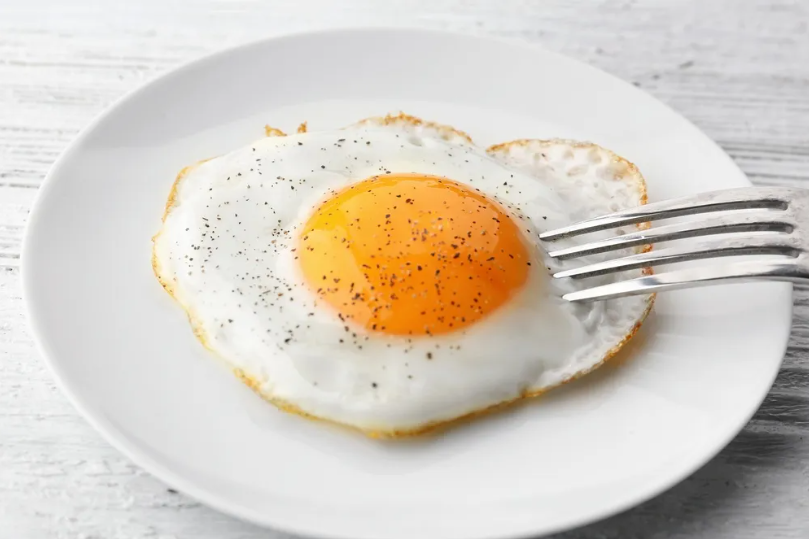

Sunny Side up egg (15 Minutes)

Intro:
Yep, we're only making one sunny side up egg for this recipe
Prep time: 5 mins
Ingredients:
- 1 teaspoon olive oil
- 1 large egg
- Salt and pepper
Instructions:
- Heat the oil in a medium nonstick skillet over low heat until slightly shimmering
- Crack an egg into the skillet/li>
- Cover with a tight lid and cook, uninterrupted, until the whites are completely set but the yolks are still runny
- Slide the eggs out of the skillet onto a plate
- Season with salt and pepper then enjoy!
Return to Main Page